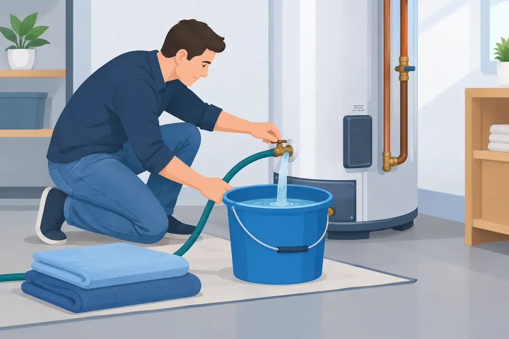

That rumbling sound from the utility room is often more than a minor annoyance. It can be sediment collecting at the bottom of a tank water heater, where it makes the system work harder and may shorten its service life. Learning how to flush water heater tanks is a practical maintenance task for many homeowners, but hot water, pressure, and aging drain valves deserve careful attention.
Middle Tennessee water can leave mineral sediment behind over time. A yearly flush is a reasonable starting point for many tank-style water heaters. Homes with harder water, heavy hot-water use, or an older heater may benefit from more frequent maintenance. Tankless and heat-pump water heaters require a different process, so do not use the instructions below for those systems.
Why flushing a water heater matters
A conventional water heater heats water from the bottom of the tank. As minerals settle there, they form a layer between the burner or heating elements and the water. The heater may take longer to recover after showers, use more energy, and make popping or crackling noises as water pushes through the sediment.
Flushing does not reverse corrosion or make a failing water heater new again. If the tank is leaking, the water is rusty throughout the house, or the unit is near the end of its expected lifespan, a professional inspection is often the wiser investment. Still, regular flushing can remove loose sediment before it becomes a larger problem.
What you need before you begin
Give yourself time for the tank to cool. Water from a heater can cause serious burns, and rushing this job is how small maintenance projects become cleanup jobs.
You will need a garden hose long enough to reach a safe drainage point, such as a driveway, exterior drain, or suitable floor drain. Use a heavy-duty hose if possible. You should also have a flat-head screwdriver if your drain valve requires one, work gloves, and towels for minor drips.
Before draining anything, consider where the water will go. The discharge can be very hot and may carry mineral debris. Do not send it across a walkway where it could burn someone, damage landscaping, or create a slipping hazard. If your water heater sits in an attic, finished area, or tight utility closet without a reliable drainage path, it is usually best to schedule a plumber.
How to flush water heater tanks safely
1. Turn off the energy source
For an electric water heater, switch off the correct breaker at the electrical panel. This step is not optional. An exposed heating element can burn out if the tank drains while power remains on.
For a gas water heater, set the gas control to the vacation or pilot setting according to the manufacturer instructions. If you are uncertain which control applies to your model, stop and call a qualified plumber. Do not disconnect gas piping for a routine flush.
2. Shut off the cold-water supply
Locate the cold-water shutoff valve above the heater and close it. This keeps the tank from refilling while you drain it. Most shutoff valves have a handle or lever, but older valves can be stiff or may begin to drip when moved.
If a valve is seized, corroded, or leaking, do not force it. A broken shutoff can leave you with a much bigger water problem than sediment in a tank.
3. Let the water cool and open a hot faucet
Wait several hours if the heater has been running. For a faster but still careful approach, turn on a nearby hot-water faucet and let it run until the water cools. Opening that faucet also lets air into the plumbing as the tank drains, reducing vacuum pressure and helping water flow more consistently.
Keep the faucet open during the draining process. A bathtub faucet often works well because it can handle flow and is easy to monitor.
4. Connect the hose to the drain valve
Attach the garden hose securely to the drain valve near the bottom of the tank. Run the other end to your chosen drainage location, keeping the hose as straight and downhill as possible. Kinks, uphill runs, and clogged hoses can slow the job considerably.
Open the drain valve slowly. At first, water may run clear. Sediment can look like sand, flakes, or cloudy water. If the flow stops, close the valve, disconnect the hose only after confirming the water is cool, and check the hose for a blockage. Never put your hand near the open end of a hose carrying hot water.
5. Flush until the water runs clear
Let the tank drain. Then briefly open the cold-water supply with the drain valve still open. This stirs loose material and carries more sediment out through the hose. You may repeat this rinse several times until the water runs reasonably clear.
Be realistic about what a flush can accomplish. A neglected tank with years of hardened buildup may not clear fully, and aggressive efforts can sometimes reveal a weak drain valve or an already failing tank. If water barely flows, the valve clogs repeatedly, or the discharge stays heavily rusty, professional service is the safer next step.
6. Refill the tank completely
Close the drain valve firmly, but do not overtighten it. Remove the hose, then turn the cold-water supply back on. Leave the hot faucet open until it produces a steady stream of water without sputtering. That tells you most of the air has been pushed from the tank and plumbing lines.
Check the drain valve and the area around the heater for leaks. A few drops from an older plastic drain valve may become a persistent leak after it has been opened. Place a towel beneath the valve and watch it for several minutes.
7. Restore power or gas only after refilling
For an electric unit, confirm the tank is full before turning the breaker back on. For a gas unit, return the control to its normal operating setting following the label on the heater. It can take time for the tank to heat a full supply of water again, so plan ahead before a busy morning or evening at home.
When a DIY flush is not the right call
There is no prize for forcing a maintenance task that has become unsafe or uncertain. Call for help if you see water around the base of the tank, smell gas, cannot shut off the water supply, notice severe corrosion, or have no safe way to drain the tank. These conditions can point to problems that a flush will not solve.
You should also leave the work to a professional if the temperature and pressure relief valve is leaking, the drain valve is damaged, or the heater produces rusty water after flushing. The relief valve is a critical safety component, and it should never be capped, plugged, or ignored.
For landlords and commercial property owners, planned maintenance can be especially valuable. A failed water heater can disrupt tenants, customers, and daily operations. A qualified plumbing technician can inspect the tank, connections, venting where applicable, shutoff valves, and signs of developing failure while completing maintenance.
Tankless and hybrid water heaters need different care
A tankless water heater does not hold a large reservoir of water, so it is not flushed through a bottom drain valve like a conventional tank. Instead, technicians typically isolate the unit and circulate an approved descaling solution through the heat exchanger. The procedure depends on the manufacturer, installed service valves, and local water conditions.
Heat-pump or hybrid water heaters also have a storage tank, but they add electrical and condensate components that need their own maintenance. Follow the owner manual closely or arrange professional service. A conventional tank flush may be part of the visit, but it should not be the only item checked.
A water heater should provide dependable hot water without demanding your attention every day. If flushing reveals leaks, loud noises, weak hot-water performance, or a drain valve that will not cooperate, Angle Stop Plumbing can help you make a clear, practical decision before a small warning becomes a cold-shower emergency.